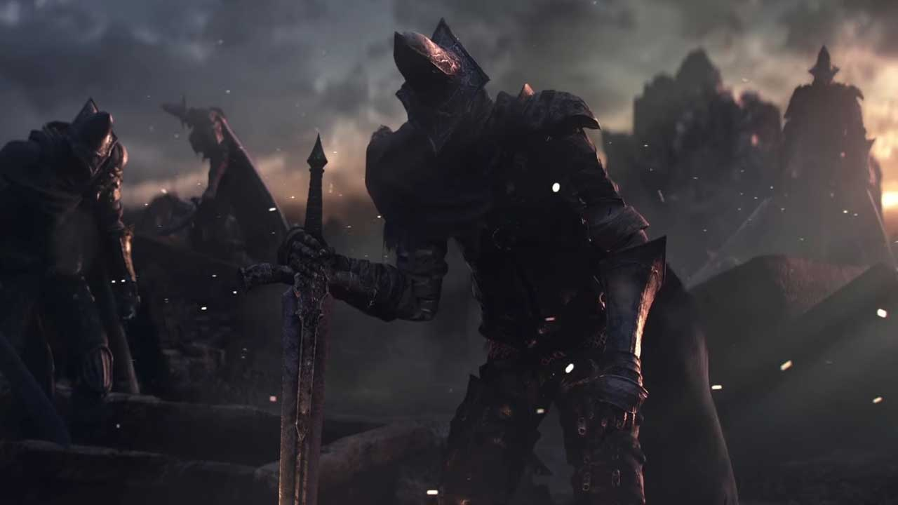

Summary
When dragons ruled the earth over the people,
the dreaded age of darkness filled over the land.
The destruction of small civilizations forced the people to take
refuge in caves underground, where a powerful ‘flame’ was eventually discovered.
But unlike the regular fire that the dragons expend, this fire was special,
magical, and rich. A few people ‘took’ the fire and absorbed its power,
becoming “Lords of Cinder”. This began “The Age of Fire” when these
Lords of Cinder brought down the dragons with their powers.
Many things were looking up for these people. After many years,
great big kingdoms were built, and life was peaceful for everyone.
Until one day, these Lords Of Cinder had noticed the flame was fading,
and everyone started to panic. Gwyn, on of the Lords of Cinder, decided to
sacrifice himself to reignite the flame. This process of reigniting the
flame went on for many many years.
Until at one point, the previous Lords of Cinder who had already sacrificed
themselves to the flame, were chosen to see if they could be re-sacrificed to
the fading flame because the most recent Lord, did not want to believe that
linking the flame would keep it kindled. Thus, these Lords were risen from
their tombs and retasked of linking the flame by entering each of their
thrones inside “Firelink Shrine”. However, these Lords did not feel like
linking the flame once more. With their corrupt and scarred souls already
touched by the flame, they set out on their own. You as the main character,
are chosen to kill these lords, absorb their souls and rekindle the fire yourself.
The Current Lords of Cinder :
The Abyss Watchers
The Abyss Watchers are Lords of Cinder that binded their souls, and previously linked the fire. They are Lords sworn to the Undead Legion, forced to fight the powers of the Abyss or darkness, hence why they are Lords of Cinder. They all wear the same outfit and use the same weapons, as they are a legion. The theory involving the Abyss Watchers not linking the fire once more, is that once they woke from linking the flame previously, they lost hope in the flame because it was fading, and that the areas surrounding their home were being engulfed by the Abyss.
Yhorm The Giant
Yhorm The Giant was also a warrior to The Abyss. After linking himself to the flame he was also risen to link the flame once again. Apon rising, his mind became corrupt and he eventually fell to The Abyss. He sought solitude inside his throne room near the Profaned Capital. His throne room is covered in seared corpses, told to be of the people who confronted Yhorm after his mind was swallowed by The Abyss. There is only one weapon that can defeat him easily, and only two of these swords were ever made. One can be found inside the giants throne room. Another was given to the humans long ago.
Aldrich The Devourer Of Gods
Aldrich was once a fellow Irithyllian among the people of Irithyll. He was a holy cleric who began to have visions of the “deep sea" where the dregs of the human souls fall to the lowest depths. Possibly referring to what is called “The Dark Age” where the all powerful flame that keeps the world alive, indefinitely fades into nothing. These visions corrupted the mind of Aldrich, and he began to have strong tendencies for cannibalism. Soon after he founded “The Church of The Deep” where he was being offered a significant amount of sacrifices. The servants to Aldrich soon became corrupted as well, and soon turned into what we call “The Deacons of The Deep”, the servants to Aldrich. As for Aldrich, most of his “sanity” stayed while he was being fed sacrifices. All of the bodies and souls he consumed morphed him into what can only be described as a “polluted mass of rotten flesh”. Because Aldrich was a threat to the sane people around him, he was forced to ignite the flame, and bring it to its formal capacity.
Princes Of Lothric
The Twin Princes of Lothric (Lorian and Lothric) are the sons to “King Oceiros” and the Queen of Lothric. Oceiros is an optional boss in the game, but The Queen is never officially mentioned or featured in the game. Once Oceiros became corrupt with everyone else, The Princes were sworn to the throne of Lothric. The Twin Princess were chosen to rekindle the flame next. However, they were taught and raised by a certain sorcerer named Pontiff Sulyvahn (another boss in the game), who taught them that the linking of the flame did not work, resulting in the princes not linking the fire like their predecessors. This is when the old Lords Of Cinder were once again chosen to attempt a relinking of the flame. When they didn’t link the fire, you the main character were chosen to kill the former Lords Of Cinder as well as the Princes of Lothric, absorb their powerful souls, and link the fire yourself.
-Back To Top-